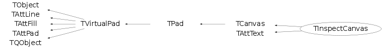

Function Members (Methods)
public:
protected:
| static Int_t | TQObject::CheckConnectArgs(TQObject* sender, TClass* sender_class, const char* signal, TClass* receiver_class, const char* slot) |
| static Bool_t | TQObject::ConnectToClass(TQObject* sender, const char* signal, TClass* receiver_class, void* receiver, const char* slot) |
| static Bool_t | TQObject::ConnectToClass(const char* sender_class, const char* signal, TClass* receiver_class, void* receiver, const char* slot) |
| void | TPad::DestroyExternalViewer3D() |
| virtual Int_t | TPad::DistancetoPrimitive(Int_t px, Int_t py) |
| virtual void | TObject::DoError(int level, const char* location, const char* fmt, va_list va) const |
| virtual void | TCanvas::ExecuteEvent(Int_t event, Int_t px, Int_t py) |
| virtual void* | TVirtualPad::GetSender() |
| virtual const char* | TQObject::GetSenderClassName() const |
| virtual void | TPad::HideToolTip(Int_t event) |
| void | TCanvas::Init() |
| void | TObject::MakeZombie() |
| void | TPad::PaintBorder(Color_t color, Bool_t tops) |
| virtual void | TPad::PaintBorderPS(Double_t xl, Double_t yl, Double_t xt, Double_t yt, Int_t bmode, Int_t bsize, Int_t dark, Int_t light) |
| void | TPad::PaintDate() |
Data Members
public:
| enum TCanvas::[unnamed] { | kShowEventStatus | |
| kAutoExec | ||
| kMenuBar | ||
| kShowToolBar | ||
| kShowEditor | ||
| kMoveOpaque | ||
| kResizeOpaque | ||
| kIsGrayscale | ||
| kShowToolTips | ||
| }; | ||
| enum TPad::[unnamed] { | kFraming | |
| kHori | ||
| kClipFrame | ||
| kPrintingPS | ||
| kCannotMove | ||
| kClearAfterCR | ||
| }; | ||
| enum TObject::EStatusBits { | kCanDelete | |
| kMustCleanup | ||
| kObjInCanvas | ||
| kIsReferenced | ||
| kHasUUID | ||
| kCannotPick | ||
| kNoContextMenu | ||
| kInvalidObject | ||
| }; | ||
| enum TObject::[unnamed] { | kIsOnHeap | |
| kNotDeleted | ||
| kZombie | ||
| kBitMask | ||
| kSingleKey | ||
| kOverwrite | ||
| kWriteDelete | ||
| }; |
protected:
| Bool_t | TPad::fAbsCoord | Use absolute coordinates |
| Double_t | TPad::fAbsHNDC | Absolute Height of pad along Y in NDC |
| Double_t | TPad::fAbsPixeltoXk | Conversion coefficient for absolute pixel to X World |
| Double_t | TPad::fAbsPixeltoYk | Conversion coefficient for absolute pixel to Y World |
| Double_t | TPad::fAbsWNDC | Absolute Width of pad along X in NDC |
| Double_t | TPad::fAbsXlowNDC | Absolute X top left corner of pad in NDC [0,1] |
| Double_t | TPad::fAbsYlowNDC | Absolute Y top left corner of pad in NDC [0,1] |
| Float_t | TAttPad::fAfile | Alignment for the file name |
| Double_t | TPad::fAspectRatio | ratio of w/h in case of fixed ratio |
| Float_t | TAttPad::fAstat | Alignment for the statistics |
| TButton* | fBackward | Pointer to the Backward button |
| Bool_t | TCanvas::fBatch | !True when in batchmode |
| Short_t | TPad::fBorderMode | Bordermode (-1=down, 0 = no border, 1=up) |
| Short_t | TPad::fBorderSize | pad bordersize in pixels |
| Float_t | TAttPad::fBottomMargin | BottomMargin |
| TCanvas* | TPad::fCanvas | ! Pointer to mother canvas |
| Int_t | TCanvas::fCanvasID | !Canvas identifier |
| TCanvasImp* | TCanvas::fCanvasImp | !Window system specific canvas implementation |
| TAttCanvas | TCanvas::fCatt | Canvas attributes |
| UInt_t | TCanvas::fCh | Height of the canvas along Y (pixels) |
| TObject* | TCanvas::fClickSelected | !Currently click-selected object |
| TPad* | TCanvas::fClickSelectedPad | !Pad containing currently click-selected object |
| TContextMenu* | TCanvas::fContextMenu | !Context menu pointer |
| Bool_t | TPad::fCopyGLDevice | ! |
| Int_t | TPad::fCrosshair | Crosshair type (0 if no crosshair requested) |
| Int_t | TPad::fCrosshairPos | Position of crosshair |
| TObject* | fCurObject | Pointer to object being inspected |
| UInt_t | TCanvas::fCw | Width of the canvas along X (pixels) |
| TString | TCanvas::fDISPLAY | Name of destination screen |
| Int_t | TCanvas::fDoubleBuffer | Double buffer flag (0=off, 1=on) |
| Bool_t | TPad::fEditable | True if canvas is editable |
| Bool_t | TPad::fEmbeddedGL | ! |
| Int_t | TCanvas::fEvent | !Type of current or last handled event |
| Int_t | TCanvas::fEventX | !Last X mouse position in canvas |
| Int_t | TCanvas::fEventY | !Last Y mouse position in canvas |
| TList* | TPad::fExecs | List of commands to be executed when a pad event occurs |
| Color_t | TAttFill::fFillColor | fill area color |
| Style_t | TAttFill::fFillStyle | fill area style |
| Bool_t | TPad::fFixedAspectRatio | True if fixed aspect ratio |
| TButton* | fForward | Pointer to the Forward button |
| TFrame* | TPad::fFrame | ! Pointer to 2-D frame (if one exists) |
| Int_t | TAttPad::fFrameBorderMode | pad frame border mode |
| Width_t | TAttPad::fFrameBorderSize | pad frame border size |
| Color_t | TAttPad::fFrameFillColor | pad frame fill color |
| Style_t | TAttPad::fFrameFillStyle | pad frame fill style |
| Color_t | TAttPad::fFrameLineColor | pad frame line color |
| Style_t | TAttPad::fFrameLineStyle | pad frame line style |
| Width_t | TAttPad::fFrameLineWidth | pad frame line width |
| Int_t | TPad::fGLDevice | ! OpenGL off-screen pixmap identifier |
| Bool_t | TPad::fGridx | Set to true if grid along X |
| Bool_t | TPad::fGridy | Set to true if grid along Y |
| Double_t | TPad::fHNDC | Height of pad along Y in NDC |
| Color_t | TCanvas::fHighLightColor | Highlight color of active pad |
| Float_t | TAttPad::fLeftMargin | LeftMargin |
| Color_t | TAttLine::fLineColor | line color |
| Style_t | TAttLine::fLineStyle | line style |
| Width_t | TAttLine::fLineWidth | line width |
| TList* | TQObject::fListOfConnections | ! list of connections to this object |
| TList* | TQObject::fListOfSignals | ! list of signals from this object |
| Int_t | TPad::fLogx | (=0 if X linear scale, =1 if log scale) |
| Int_t | TPad::fLogy | (=0 if Y linear scale, =1 if log scale) |
| Int_t | TPad::fLogz | (=0 if Z linear scale, =1 if log scale) |
| Bool_t | TPad::fModified | Set to true when pad is modified |
| TPad* | TPad::fMother | ! pointer to mother of the list |
| TString | TPad::fName | Pad name |
| Int_t | TPad::fNumber | pad number identifier |
| TList* | fObjects | List of objects inspected |
| Int_t | TPad::fPadPaint | Set to 1 while painting the pad |
| TObject* | TPad::fPadPointer | ! free pointer |
| TPad* | TCanvas::fPadSave | !Pointer to saved pad in HandleInput |
| TObject* | TPad::fPadView3D | ! 3D View of this TPad |
| TVirtualPadPainter* | TCanvas::fPainter | !Canvas (pad) painter. |
| Double_t | TPad::fPhi | phi angle to view as lego/surface |
| Double_t | TPad::fPixeltoX | xworld = fPixeltoXk + fPixeltoX*xpixel |
| Double_t | TPad::fPixeltoXk | Conversion coefficient for pixel to X World |
| Double_t | TPad::fPixeltoY | yworld = fPixeltoYk + fPixeltoY*ypixel |
| Double_t | TPad::fPixeltoYk | Conversion coefficient for pixel to Y World |
| Int_t | TPad::fPixmapID | ! Off-screen pixmap identifier |
| TList* | TPad::fPrimitives | ->List of primitives (subpads) |
| Bool_t | TVirtualPad::fResizing | !true when resizing the pad |
| Bool_t | TCanvas::fRetained | Retain structure flag |
| Float_t | TAttPad::fRightMargin | RightMargin |
| TObject* | TCanvas::fSelected | !Currently selected object |
| TString | TCanvas::fSelectedOpt | !Drawing option of selected object |
| TPad* | TCanvas::fSelectedPad | !Pad containing currently selected object |
| Int_t | TCanvas::fSelectedX | !X of selected object |
| Int_t | TCanvas::fSelectedY | !Y of selected object |
| Bool_t | TQObject::fSignalsBlocked | ! flag used for suppression of signals |
| Short_t | TAttText::fTextAlign | Text alignment |
| Float_t | TAttText::fTextAngle | Text angle |
| Color_t | TAttText::fTextColor | Text color index |
| Font_t | TAttText::fTextFont | Text font number |
| Float_t | TAttText::fTextSize | Text size |
| Double_t | TPad::fTheta | theta angle to view as lego/surface |
| Int_t | TPad::fTickx | Set to 1 if tick marks along X |
| Int_t | TPad::fTicky | Set to 1 if tick marks along Y |
| TString | TPad::fTitle | Pad title |
| Float_t | TAttPad::fTopMargin | TopMargin |
| Bool_t | TCanvas::fUpdating | !True when Updating the canvas |
| Bool_t | TCanvas::fUseGL | !True when rendering is with GL |
| Double_t | TPad::fUtoAbsPixelk | Conversion coefficient for U NDC to absolute pixel |
| Double_t | TPad::fUtoPixel | xpixel = fUtoPixelk + fUtoPixel*undc |
| Double_t | TPad::fUtoPixelk | Conversion coefficient for U NDC to pixel |
| Double_t | TPad::fUxmax | Maximum value on the X axis |
| Double_t | TPad::fUxmin | Minimum value on the X axis |
| Double_t | TPad::fUymax | Maximum value on the Y axis |
| Double_t | TPad::fUymin | Minimum value on the Y axis |
| TView* | TPad::fView | ! Pointer to 3-D view (if one exists) |
| TVirtualViewer3D* | TPad::fViewer3D | ! Current 3D viewer |
| Double_t | TPad::fVtoAbsPixelk | Conversion coefficient for V NDC to absolute pixel |
| Double_t | TPad::fVtoPixel | ypixel = fVtoPixelk + fVtoPixel*vndc |
| Double_t | TPad::fVtoPixelk | Conversion coefficient for V NDC to pixel |
| Double_t | TPad::fWNDC | Width of pad along X in NDC |
| UInt_t | TCanvas::fWindowHeight | Height of window (including menubar, borders, etc.) |
| Int_t | TCanvas::fWindowTopX | Top X position of window (in pixels) |
| Int_t | TCanvas::fWindowTopY | Top Y position of window (in pixels) |
| UInt_t | TCanvas::fWindowWidth | Width of window (including borders, etc.) |
| Double_t | TPad::fX1 | X of lower X coordinate |
| Double_t | TPad::fX2 | X of upper X coordinate |
| Float_t | TAttPad::fXfile | X position where to draw the file name |
| Double_t | TPad::fXlowNDC | X bottom left corner of pad in NDC [0,1] |
| Size_t | TCanvas::fXsizeReal | Current size of canvas along X in CM |
| Size_t | TCanvas::fXsizeUser | User specified size of canvas along X in CM |
| Float_t | TAttPad::fXstat | X position where to draw the statistics |
| Double_t | TPad::fXtoAbsPixelk | Conversion coefficient for X World to absolute pixel |
| Double_t | TPad::fXtoPixel | xpixel = fXtoPixelk + fXtoPixel*xworld |
| Double_t | TPad::fXtoPixelk | Conversion coefficient for X World to pixel |
| Double_t | TPad::fY1 | Y of lower Y coordinate |
| Double_t | TPad::fY2 | Y of upper Y coordinate |
| Float_t | TAttPad::fYfile | Y position where to draw the file name |
| Double_t | TPad::fYlowNDC | Y bottom left corner of pad in NDC [0,1] |
| Size_t | TCanvas::fYsizeReal | Current size of canvas along Y in CM |
| Size_t | TCanvas::fYsizeUser | User specified size of canvas along Y in CM |
| Float_t | TAttPad::fYstat | Y position where to draw the statistics |
| Double_t | TPad::fYtoAbsPixelk | Conversion coefficient for Y World to absolute pixel |
| Double_t | TPad::fYtoPixel | ypixel = fYtoPixelk + fYtoPixel*yworld |
| Double_t | TPad::fYtoPixelk | Conversion coefficient for Y World to pixel |
| static Bool_t | TQObject::fgAllSignalsBlocked | flag used for suppression of all signals |
| static Bool_t | TCanvas::fgIsFolder | Indicates if canvas can be browsed as a folder |
| static Int_t | TPad::fgMaxPickDistance | Maximum Pick Distance |
Class Charts
{kind=link}
{kind=link}
{kind=link}
{kind=link}

Function documentation
void InspectObject(TObject* obj)
void Inspector(TObject* obj)
static function , interface to InspectObject. Create the InspectCanvas if it does not exist yet.
void Divide(Int_t nx = 1, Int_t ny = 1, Float_t xmargin = 0.01, Float_t ymargin = 0.01, Int_t color = 0)
{ }